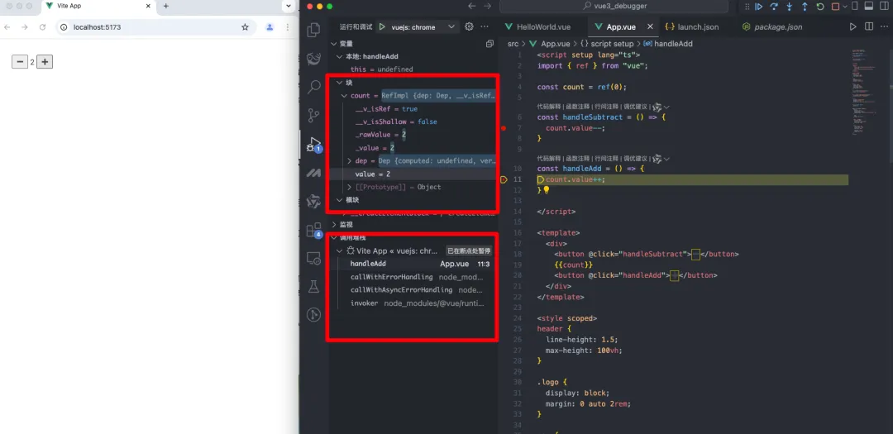
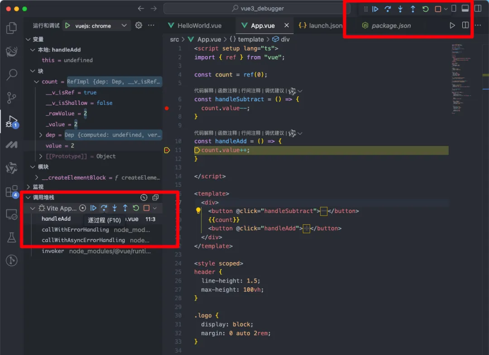

如何用 VSCode 调试 Vue 项目
开启 sourcemap
如果你的项目构建工具使用的是 webpack, 一定要在 vue.config.js 文件中，添加如下配置：
module.exports = {
configureWebpack: {
devtool: "source-map",
},
};
如果是 Vue3 + Vite , 可以跳过这个步骤
2. 启动项目并记录端口
在项目根目录下，运行以下命令：
npm run dev
启动项目后，会看到类似如下的输出，记录下访问端口（vue3 目前默认是 5173，可以自己修改）：
App running at:
- Local: http://localhost:5173/
- Network: http://192.168.1.214:5173/
3. 新建 debug 配置
点击在 Activity Bar 里的 Debugger 图标来到 Debug 视图，然后点击运行和调试来配置一个 launch.json 的文件，
选择 Chrome/Edge：Launch 环境。然后将生成的 launch.json 的内容替换成为相应的配置：
{
"version": "0.2.0",
"configurations": [
{
"type": "chrome",
"request": "launch",
"name": "vuejs: chrome",
"url": "http://localhost:5173",
"webRoot": "${workspaceFolder}/src",
"sourceMapPathOverrides": {
"webpack:///src/*": "${workspaceFolder}/src/*"
}
}
]
}
注意：url 地址修改成你项目本地启动的地址，我这个直接默认使用的 http://localhost:5173
4. 设置断点并启动调试
在 src/App.vue 的 line7 和 line11 的地方设置一个断点，我们来观察下 count 的变化。
在根目录打开你惯用的终端并使用 Vue CLI 开启这个应用：
npm run dev
来到 Debug 视图，选择 我们刚刚添加的调试配置 vuejs: chrome，
然后按 F5 或点击那个绿色的 play 按钮。
随着一个新的浏览器实例打开 http://localhost:5173，你的断点现在应该被命中了。

5. 调试操作
在代码中设置断点后，程序执行到断点时会暂停，此时可查看相关调试信息。
例如，你可以查看当前所有变量的状态，了解程序的执行状态。
还可以从当前断点跳到下一个断点，一行一行往下执行，或者进入或退出方法。
